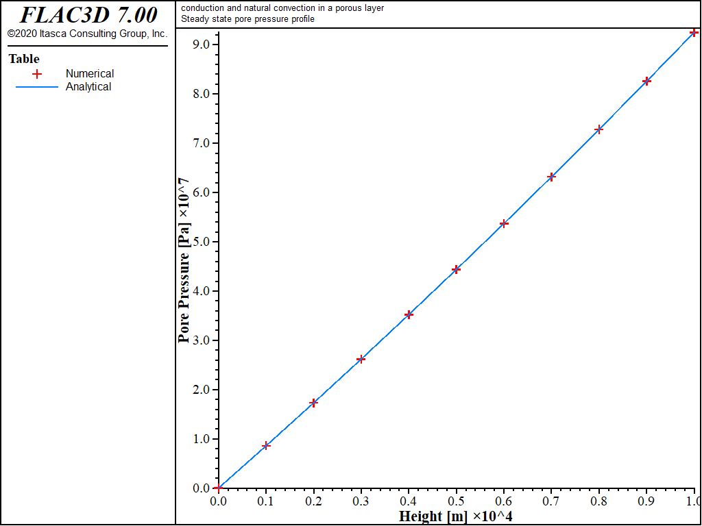

顶部加热的饱和多孔介质中的稳态对流
注意
要在 FLAC3D 中查看此工程，请使用菜单命令 。选择“Thermal/NaturalAdvection”，再选择“NaturalAdvection.f3dprj”即可加载。该工程的主数据文件（main data files）在本示例末尾给出。
本示例说明密度随温度变化对顶部加热的、横向范围很大的饱和多孔层中孔隙压力分布的影响。层厚为 \(b\)。层底部温度固定为 \(T_1\)，顶部固定为 \(T_0 > T_1\)。边界对流体流动不透水；问题为一维问题。对于比流量为零的情形，稳态温度解为
(1)\[T = {{T_1 - T_0} \over {b}} x + T_0\]
其中 \(x\) 自层顶面向下量测。假定无流体流动，则有
(2)\[{dp \over dx} = \rho g\]
利用 \(\rho = \rho_0[1 - \beta (T - T_r)]\)（其中 \(T_r\) 为参考温度，\(T\) 由温度解即方程(1)给出），对该方程积分可得
(3)\[p = \rho_0 gx - \rho_0 g \beta [(T_0 - T_r)x + {{T_1 - T_0} \over b} {x^2 \over 2}] + p_0\]
其中 \(p_0\) 为参考压力。
为用 FLAC3D 模拟该问题，首先建立温度场，然后以流动模式循环计算，直至达到稳态孔隙压力解。对于所处理的情形，模拟结束时计算得到的孔隙压力相对误差可忽略（小于 10-5%；见图 1（Figure 1））。


图 1：顶部加热的多孔饱和层稳态孔隙压力分布中数值（符号）与解析（实线）结果的比较。
数据文件
model new
model title 'conduction and natural convection in a porous layer'
fish automatic-create off
model config fluid thermal
program call "fishFunctions"
[setup]
; --- 几何形状 ---
zone create brick size 5 5 10 point 0 (-5e3,-5e3,-5e3) ...
point 1 (5e3,-5e3,-5e3) ...
point 2 (-5e3,5e3,-5e3) ...
point 3 (-5e3,-5e3,5e3)
; --- 热学和流体模型 ---
zone thermal cmodel advection-conduction
zone fluid cmodel assign isotropic
; --- 参数 ---
; （力学）
zone initialize density 2000
; （热学）
zone thermal property conductivity=[_condu] specific-heat=[_mspec]
zone thermal property conductivity-fluid=[_fcond] specific-heat-fluid=[_fspec]
zone thermal property expansion-fluid=[_fthex] expansion=[_thexp]
zone thermal property temperature-reference=[_T1]
; （流体）
zone fluid property porosity=[_poros] permeability=[_mobil]
zone fluid property biot=1 undrained-thermal-coefficient=0
zone fluid biot off
zone gridpoint initialize fluid-modulus=2e5
zone gridpoint initialize fluid-tension=-1e10
zone initialize fluid-density=[_fdens]
; --- 初始条件 ---
; --- 边界条件 ---
zone face apply temperature [_T1] range position-z -5e3
zone face apply temperature [_T0] range position-z 5e3
; --- 设置 ---
model gravity 0 0 -10.0
model mechanical active off
; --- 热传导求解 ---
zone initialize fluid-density=0.0
model fluid active off
model thermal active on
model step 500
zone initialize fluid-density=[_fdens]
model thermal active off
model fluid active on
model step 500
[ref_pp]
fish list [err_pp] [err_t]
[_makeTables]
⇐ One-Dimensional Solution of Thermal Transport by Forced Convection and Conduction | Steady-State Convection in a Saturated Porous Medium Heated from Below ⇒
| 这些内容对您有帮助吗？… | FLAC3D © 2019, Itasca | 原文更新于 2020 年 10 月 8 日 |
| 版权与免责声明 | ||